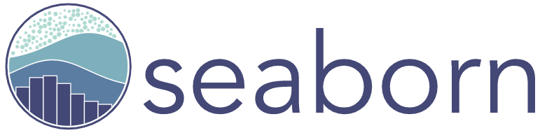
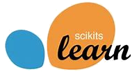
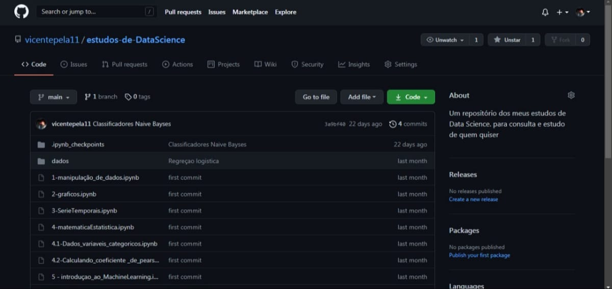
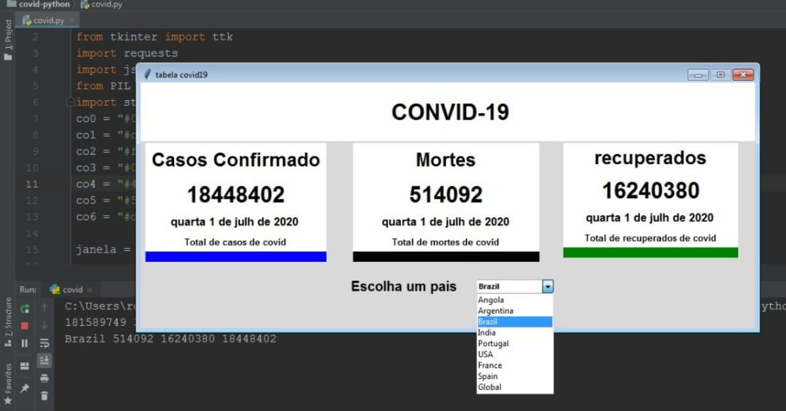
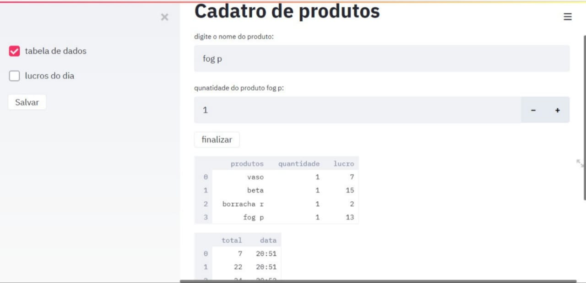
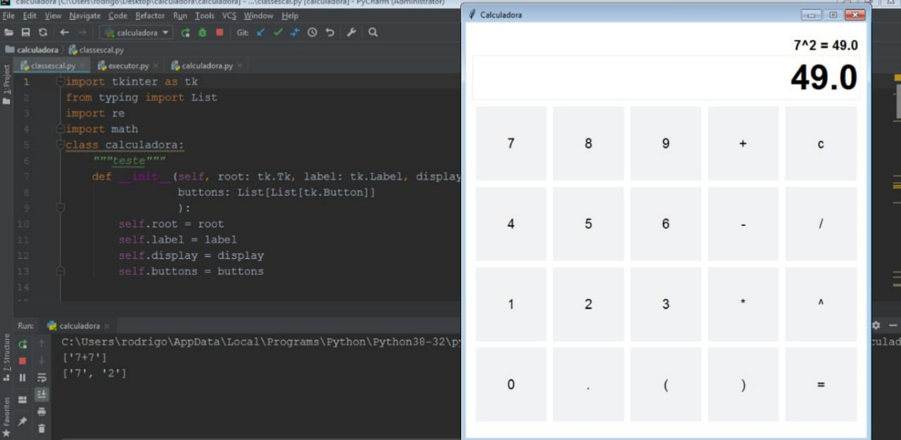

Portfolio

Vicente F. Moita
Sou do estado de São Paulo, tenho 20 anos,
atualmente estou cursando o técnico em eletrônica no SENAI.
Programador python, com objetivo em me tornar um cientista de dados.
Estou em busca do meu primeiro emprego
na área como júnior, e para isso
continuo estudando e me informando.


Conhecimento para - Data Science

Linguagem de programação Python
Biblioteca de analise e manipulação de dados
Biblioteca python para trbalhar com matrizes e matematica

Biblioteca de visualização de dados
Biblioteca de visualização de dados

Estatistica Basica

biblioteca de aprendizado de máquina
Conhecimentos para - Front End

Linguagem de programação java-script

Linguagem de Marcação de Hipertexto

Folha de estilo
Aprendendo...

Deep Learning

Ingles

banco de dados
Formação
Senai - Fundação Zerrenner
Curso: Eletrônica
Ensino medio: concluido
2016 - 2018

linkedin learning:
Ciência de Dados Formação Básica
Da professora Jessica Temporal
coursera:
machine learnin - Da Stanford University
Projetos

Repositorio com todos os meus estudos de DataScience
saiba mais...

Interface Grafica com python e tkinter - dados do covid-19
saiba mais...

Sistema de cadastro de produtos com Python e Streamlit
saiba mais...

Calculadora com tkinter e python
saiba mais...